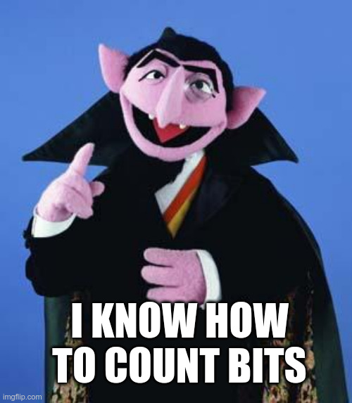

In what concerns the continuous evaluation solving exercises grade during the semester, you should submit until 23:59 of November 1st
(this exercise will still be available for submission after that deadline, but without couting towards your grade)
[to understand the context of this problem, you should read the class #04 exercise sheet]

Count von Count has just found out that he can compute the number of 1 bits in a number! He needs your help to sort a set of numbers based on this.Given N distinct integers, your task is to sort them in descending order according to the number of 1's in their binary representation. If two numbers have the same number of 1's, you have to sort them in ascending order of their value.
The first input line contains an integer N: the amount of numbers to consider.
The second line contains N distinct integers X1 X2 ... XN, the numbers you want to sort.
The output should consist of N lines, containing the numbers sorted in the indicated order (one number per line).
The following limits are guaranteed in all the test cases that will be given to your program:
| 1 ≤ N ≤ 105 | Amount of numbers | |
| 1 ≤ Xi ≤ 109 | Number values |
| Example Input | Example Output |
8 5 2 15 3 9 4 6 7 |
15 7 3 5 6 9 2 4 |
The binary representation of each number in the input is: